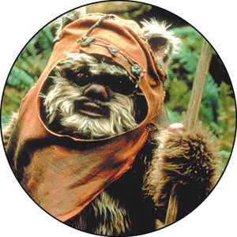

Main article area
In this layout, we display the areas in source order for any screen less that 500 pixels wide. We go to a two column layout, and then to a three column layout by redefining the grid, and the placement of items on the grid.
In this layout, we display the areas in source order for any screen less that 500 pixels wide. We go to a two column layout, and then to a three column layout by redefining the grid, and the placement of items on the grid.
Sidebar 
Advertising
Bla bla kup